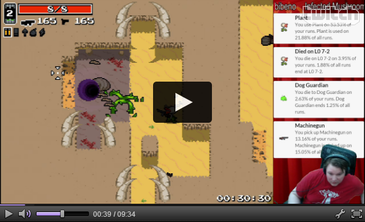

ThroneStats
ThroneStats is a service to gather and display statistics on runs in Nuclear Throne by Vlambeer.
ThroneStats is not trying to be another "ThroneButt", but provides various statistics on your current run, primarily for streamers, in the form of an overlay you can use with OBS or Xsplit.
You can also view collected statistics on global and per-player basis in the "View stats" -tab.
Stats gathered and shown
- Weapon pickup rate (Most popular: )
- Causes of death (Most common: )
- Mutation choices (Most popular: )
- Crowns (Most popular: )
- Character use (Most popular: )
- Levels players die on (Most common: )
How does it look like?
The Twitch logo is a bit annoyingly in the way on the embedded player. You can try fullscreen if you can't see properly otherwise.
How do I get it
Click on the "Get overlay" -tab at the top of the page for full setup instructions.
What if I'm not a streamer?
While this was done primarily for streamers, you might still get something out if it even if you don't stream.
Firstly, for ThroneStats to track your runs you need to open it in a browser window. Go to the "Get overlay" -tab above and use the "View live stats" -feature to view the statistical information as things are happening and ensure that ThroneStats is collecting the data.
However you'll have to keep this on another screen, or beside the Nuclear Throne window if you want to see it.
You can view both global and per-player statistics on the "View stats" -tab above.
What browsers does this work on?
After quick testing it looks like it works on Chrome, Firefox and Edge. Didn't test others, but it's fairly likely any WebKit based browser (e.g. Safari) also works, and hopefully any reasonably modern browser should work. If you have issues with any MODERN browser, let me know, and I might fix it.
I'm not seeing any data, why?
First and foremost ThroneStats can only track players if they have given their SteamID64 and Streamkey CORRECTLY and have the tracker overlay or "View live stats" -screen open while they are playing.
Also, you should start a run on Nuclear Throne and let it run for at least 15-30 seconds before ThroneStats can get data from the API.
There is also the small chance that the backend is down. Maybe Tweet to @lietux.
Who made this?
Lietu made this.
Can I contribute somehow?
Maybe. The source code is publicly available at https://github.com/lietu/thronestats. If you want to contribute code, graphics, or just have feature requests, go there.
Legal stuff
Nuclear Throne is (probably) a trademark of Vlambeer. ThroneStats is not affiliated with Vlambeer and vice-versa. Neither is the creator of ThroneStats.
ThroneStats -service saves your run information to keep global stats. It shouldn't contain any private information, but if you're cautious you can always just get the source code and run it locally for yourself. Up to you.
Copyright © 2015-infinity Janne "Lietu" Enberg.
Get overlay
You only need to fill in your SteamID64 and Stream Key to get a custom link that you can show in your OBS/Xsplit to get your notifications running.
OBS Setup
For OBS you'll likely want to use CLR Browser and the guide is written with it in mind.
- Fill in the information above and click on "Get overlay link" to get the URL for your overlay.
-
In OBS add a new CLR Browser source to your scene (or as a
Global Source).
- In the "URL" -field add your overlay URL.
- Set your preferred dimensions for the overlay. Try out width 300 and set height to your stream height (e.g. 720).
Xsplit Setup
This is unfortunately based on hearsay but you should be able to add a "webpage URL source" to your scene, which should function similarly to CLR Browser in OBS. If you can provide full set of instructions, please contact me.
View statistics
General information
| Recorded runs | |
| Favorite character | |
| Favorite weapon | |
| Favorite crown | |
| Favorite mutation | |
| Most deaths caused by | |
| Most deaths in | |
Characters
| Character | Runs | % |
|---|---|---|
Mutations
| Mutation | Runs | % |
|---|---|---|
Crowns
| Crown | Runs | % |
|---|---|---|
Weapons
| Weapon | Runs | % |
|---|---|---|
Deaths
| Level | Runs | % |
|---|---|---|
Easiest way to get your SteamID64 is to go to https://steamid.io/lookup and click on "Sign in through Steam", and then authenticate yourself with your Steam user account. After that click on your profile image and choose "profile" and look for the the "steamID64" -line.
Locating your stream key from Nuclear Throne is easy. Just go to Settings -> Game, and click on "Stream Key" if it says "Disabled" to generate one.